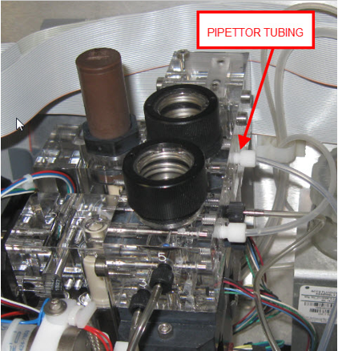
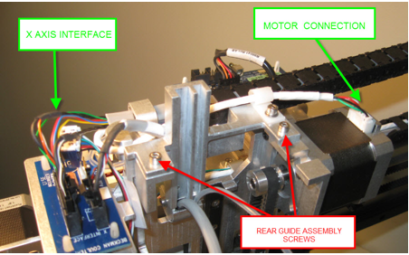
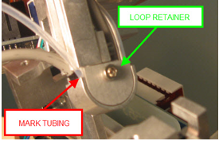
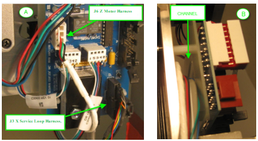
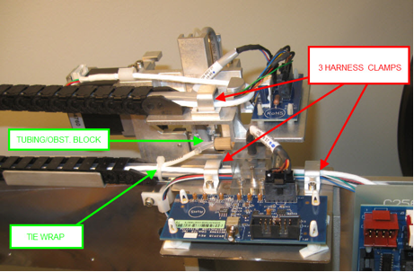
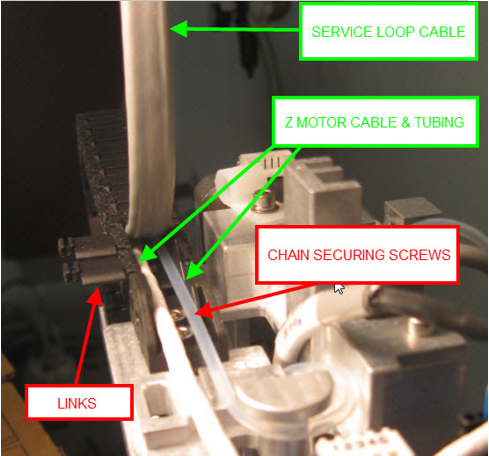
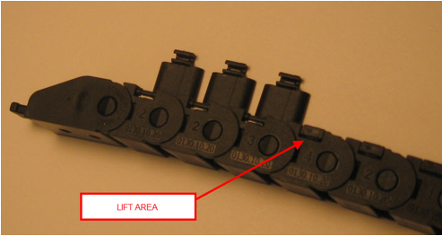
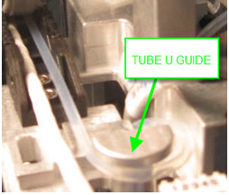

Remove / Install an X Axis Service Loop Chain Component on the X Axis Linear Slide Pipettor Gantry
Perform these steps to remove and install the X Axis Service Loop cable, Supply Tubing, or Z Motor cable on an X Axis Service loop chain.
Caution: The instrument should be powered off when making or breaking electrical connectors to avoid damaging the instrument's electronics.
Note: Cables and tubing can be replaced individually or all together.
-
Drain fluid tubing.
- Disable the pipettor motors and lower the pipettor probe into the Wash tower.
- Enable the Vacuum Pump in Diagnostics >> Digital Devices so that fluid does not overflow the Wash tower.
-
Disconnect the pipettor tubing from the Fluidics manifold (picture below).

- Drain for 30 seconds or until the fluid is removed from the fluid path to the transducer.
- Disable the Vacuum Pump and move the Pipettor to the Home position.
- Close the Digital Devices screen and return to the Main UI.
-
Remove the Z axis portion of the Supply Tubing.
- Power off the instrument.
- Move the pipettor carriage to the left of the Wash Tower, then manually move the transducer downward a couple of inches.
-
Remove the Front Service Loop guide by removing the two screws holding it in place (picture A below). Free the tubing and cable from the backside of the guide.

- Remove the connector cover by loosening the cover screw, then lifting the cover up out of the slot (picture A above).
- Disconnect the transducer power and heater connectors. Disconnect the tube fitting from the transducer.
- Slide the service loop cable out of the channel in the left side of the transducer housing (picture B above).
-
Disconnect the following from the X axis interface PCB (picture below):
- the Z Axis service loop cable
- the X Axis service loop cable
- the Z Axis Home Sensor
-
Remove the Z Motor harness from the Z motor connection and the clamp (picture below).

- Remove the two mounting screws which secure the Rear Service Loop Guide assembly (picture above).
- Lift the guide upward until the loop retainer screws are accessible.
- Mark a line on the Supply Tubing where it enters the loop retainer (picture below).
-
Remove the Service Loop retainer screw from the bottom of the rear guide (Supply Tube side only) and remove the retainer and tubing from the Rear Service Loop Guide (picture below).

- Place the Rear Service Loop Guide back into position without securing it to the carriage.
-
Removing the X axis chain.
-
Locate the Main Pipettor Interface PCB on the back side of the Pipettor Gantry and disconnect the following (picture A below).
- J2 X Axis Service Loop Cable
- J6 Z Axis Motor

- Pull the 2 disconnected cables up through the channel created by the PCB standoffs (picture B above).
- Remove the 3 harness retaining clamps and cut the tie wrap (picture below).
-
Disconnect the tubing from the chain side of the Obstruction Detect fluid block (picture below).

-
Lift the chain components up and remove the securing screws from each end piece of the chain (picture below). Remove the chain for the gantry.
Note: Be aware of the orientation of the chain components in the picture below. The Z Motor cable and fluid tubing lay in the bottom of the chain and the Service Loop cable is positioned on top. The top of the chain has the removable links.

-
Use a small slotted blade screwdriver to lift open all links of the service loop chain (picture below). Remove the chain components.

-
Locate the Main Pipettor Interface PCB on the back side of the Pipettor Gantry and disconnect the following (picture A below).
-
Reinstalling the X axis chain.
Note: If the Supply Tubing has been replaced, mark the replacement tubing in the same location as the one being removed.
- Place the chain components in the chain and fasten all the links.
- Secure the chain to the gantry with end of chain securing screws (Step 3e).
- Connect the Service Loop tubing to the Obstruction Detect block (Step 3d).
- Route the X Axis Service Loop and Z Motor cable into the Main Pipettor PCB standoff channel (Step 3b).
- Connect the X Axis Service Loop (J3) and the Z Motor (J6) to the Main Pipettor PCB (Step3a).
- Lift the Rear Service Loop Guide and align the Service Loop Tubing in the retainer loop using the tube marking. Secure with the retainer and screw (Step 2l).
-
Route the tubing around the Tube U Guide (picture below) and secure the Rear Service Loop Guide with 2 screws (Step 2i).

-
Route the Z Axis cable and Tubing into the slot on the rear guide and then into the channel on the transducer (Step 1e).
Caution: The cable and tubing loop may rub on the instrument cover if looped too high. When completed, the cable and tubing should not extend above the rear service loop guide with the pipettor at the Z home position and should be similar in height to each other and to the rear guide.
- Connect the transducer heater and power connectors together, then lay them flat on top of the housing.
- Install the Connector Cover placing the slot over the securing screw. After installation ensure no wires are pinched or visible outside of the cover. Secure the cover screw (Step 2d).
- Connect the Tubing to the transducer.
- Align the tubing and cable with the front service loop guide.
- Install the front Z Axis Guide using its 2 mounting screws, ensuring that the cable and tubing are properly routed in their slots in the guide.
- Connect the Z Motor cable to the Z Motor and place the cable in the clamp (Step 2h).
-
Connect the following to the X axis interface PCB (Step 2g):
- the Z Axis service loop cable
- the X Axis service loop cable
- the Z Axis Home Sensor
- Install the 3 harness retaining clamps and a tie wrap (Step 3c).
-
Perform these verifications to ensure proper operation.
- Manually move the pipettor carriage up and down. Inspect the tubing and cable for proper movement.
- Manually move the pipettor carriage left to right. Inspect the chain during this action to ensure proper clearance from the card cage. Adjust the chain end pieces to improve clearance.
- Verify the transducer's temperature. Refer to the Adjustment: Ultrasonic Transducer Temperature procedure for details.
- Verify all Ultrasonic Transducer adjustments. Refer to the Adjustment: Ultrasonics Transducer procedure for details.
- Home the Pipettor and verify that the Pipettor is at the Home location.
- Perform the Ultrasonics Level Sense Wet/Dry test. (Run 20 reps). Refer to the Ultrasonics Level Sense Test - Wet/Dry procedure.
- Refer to the Instrument Verification Protocol for Access Service Repair document and perform the required system verification procedures.